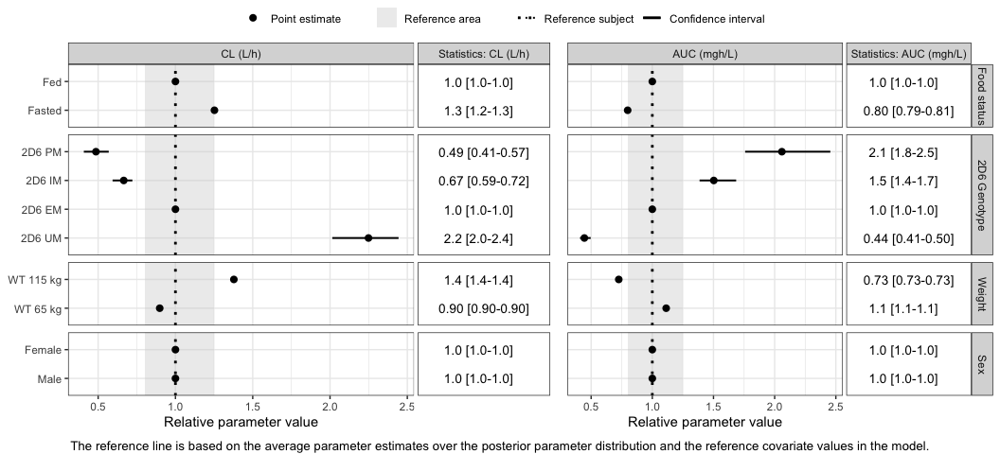

The goal of PMXForest is to make it easy to create Forest plots for pharmacometric models, in particular NONMEM models. The user only have to specify information about the covariate values to visualize, how the covariates relates to the parameters of interest and where the uncertainty information is. The latter can be a NONMEM .cov file, a PsN bootstrap or SIR raw_results file. The Forest plots will include the crucial information needed for an accurate interpretation of the plot and the user have full control of the formatting and annotations.
Installation
You can install the development version of PMXForest from GitHub with:
# install.packages("devtools")
devtools::install_github("pharmetheus/PMXForest")The latest versions of the vignettes are available in the BuildVignettesHereDirectory. Open the Rmd-files in RStudio and click the Knit button to compile. Note that some of the vignettes will take a fair bit of time to compile.
To get the latest stable release (including vignettes), please click the appropriate link on the right side of the page. Download the file with a name that starts with PMXForest. Install PMXForest with the install.packages command, e.g.:
install.packages("path_to_release.tar.gz")Example of using PMXForest
This is a basic example which shows you how to create a Forest plot for a NONMEM model.
First attach the PMXForest library:
library(PMXForest)and set the ggplot theme
Specify the covariate information
The following code sets up a data frame with information about the coavriate combinations to visualise. It also specifies how the covariates values should appear and how the covariate groups should be described in the plot.
dfCovs <- createInputForestData(
list("FOOD" = c(0,1),
"GENO"=list("GENO1" = c(1,0,0,0),
"GENO3" = c(0,0,1,0),
"GENO4" = c(0,0,0,1)),
"WT" = c(65,115),
"SEX" = c(1,2))
)
covnames <- c("Fasted","Fed","2D6 UM","2D6 EM","2D6 IM","2D6 PM",
"WT 65 kg","WT 115 kg","Male","Female")
covariateGroupNames <- c("Food status","2D6 Genotype","Weight","Sex")Describe how the parameters are related to the covariates
The paramFunction specifies the relationship between the covariates and the parameters of interest. It is not typically not necessary to translate the whole NONMEM model to R code or specify any differential equations. (PMXForest can be used together with mrgsolve, rxode2, etc for more complex problems, but this is usually not necessary.) The code below also specifies how the parameter names should apepar in the Forest plot.
paramFunction <- function(thetas, df, ...) {
if(df$WT !=-99) {
TVCL <- thetas[4] * (df$WT / 75)**thetas[2]
} else {
TVCL <- thetas[4]
}
CLGENO <- 1
if (df$GENO1 !=-99 && df$GENO1 == 1) CLGENO <- (1 + thetas[8])
if (df$GENO3 !=-99 && df$GENO3 == 1) CLGENO <- (1 + thetas[9])
if (df$GENO4 !=-99 && df$GENO4 == 1) CLGENO <- (1 + thetas[10])
CLFOOD <- 1
if (any(names(df)=="FOOD") && df$FOOD !=-99 && df$FOOD == 0) CLFOOD <- (1 + thetas[11])
CL <- CLFOOD*CLGENO*TVCL
AUC <- 80/CL
return(list(CL,AUC))
}
functionListName <- c("CL (L/h)","AUC (mgh/L)")Generate the data for the plot
PMXForest takes care of the simulations/predicitons needed for the plot, including the generation of uncertainty. In the example below, the uncertainty is taken from the variance-covariance information from NONMEM ($COV). The sampling is done by the getSamples function and the actual calculations are done by getForestDFSCM. The calculations can be parallelized if needed.
covFile <- "inst/extdata/SimVal/run7.cov"
extFile <- "inst/extdata/SimVal/run7.ext"
dfSamples <- getSamples(covFile,extFile,n=175)
dfres <- getForestDFSCM(dfCovs = dfCovs,
cdfCovsNames = covnames,
functionList = list(paramFunction),
functionListName = functionListName,
noBaseThetas = 14,
dfParameters = dfSamples
)Create the Forest plot
With the above information is an easy task to generate the Forest plot.
forestPlot(dfres,groupNameLabels = covariateGroupNames,size=10)
Further information
The above is a simple use case of PMXForest for a straight forward PK model. However, PMXForest is quite capable of handling most problems and complexities. Both the “standard” use for NONMEM based problems as well as more tailored solutions to other types of problems are described in the package vignettes.
Once the package is installed you can issue the command: browseVignettes("PMXForest")